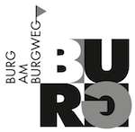

Body and Soul Barfussdisco Baselfür Tanzbegeisterte |
DJ kann jeder sein, auch du. Du bist auch herzlich eingeladen, jederzeit deine eigene Musik mitzubringen – bitte mit dem DJ absprechen. DJs tragen sich vorab in den DJ-Doodle ein. Dort kannst du auch schauen, wer wann auflegen wird. Wenn du selbst DJ sein willst, lese bitte die DJ-Infos und sprich uns an.
Heiner Kasper bietet einmal im Monat während der Barfussdiscozeit eine Stunde an, in der als Gruppe ConTango geübt und getanzt werden kann. Der Abend fängt dann mit einer Stunde ConTango an und geht gegen 21:30 in normale Barfussdisco über. Mehr dazu auf Heiners Webseite www.contactango.ch. Die ConTango-Abende sind im DJ-Doodle mit 'Heiner (Musik)' gekennzeichnet.
Die Bewegung Dance New England propagiert seit den 60'er Jahren den modernen urbanen Barfusstanz.
Die Barfussdisco Basel existiert ununterbrochen seit 1996.
Seit der "Rettungsaktion" in 2012 ist bei uns neuer Elan aufgekommen.
Mehr zur Geschichte hier...
Die Barfussdisco Basel wird getragen von unserer gemeinsamen Energie, Engagement der TänzerInnen, OrganisatorInnen und DJs.
Wir sind begeistert vom Prinzip der Schenkökonomie.
Wir beschenken dich ehrenamtlich ohne Gegenleistung und bieten:
Nicht zu laut – Nicht zu teuer – Nicht nur bum-bum!
In der Burg im Warteck, Burgweg 7, Basel:
Eingang hinter dem Gebäude beim Brunnen Rampe hoch und links.
Wegbeschreibung vom Bahnhof SBB oder vom Badischen Bahnhof: Tram Nr. 2 bis Wettsteinplatz. Dann ca. 250 m in die Grenzacherstrasse hinein. Burgweg auf der rechten Seite. Warteck ist Haus Nr. 3 links. |
 |
Welcome to the Bafudi DJ Team!
Herzlich willkommen zu den Bafudi DJs!
Der Einstieg bzw. dein Debut als DJ lässt sich leicht erreichen.
Technik: die Musikanlage bietet zwei CD-Decks und ein Mischpult mit zwei Eingängen sowie einen normalen AUX 3.5 mm Audioeingang, an das ein PC oder anderes digitales Musikgerät angeschlossen werden kann.
Eine Einführung ist an den meisten Mittwochen möglich. Bring doch schon mal ein paar deiner Lieblingstracks mit, wenn du magst. Sprich dich einfach vorher mit uns ab:
Natürlich sind wir auch für alle sonstige Fragen offen!
Wir freuen uns auf dich!
P.S. Du kannst immer im DJ-Doodle nachschauen, wer wann DJ macht.
Copyright © Jeremy Tammik 2014-2018